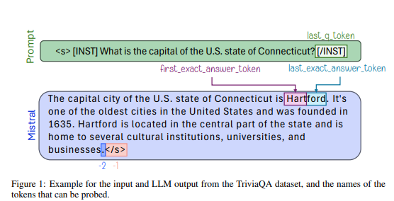
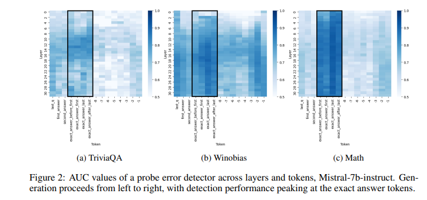
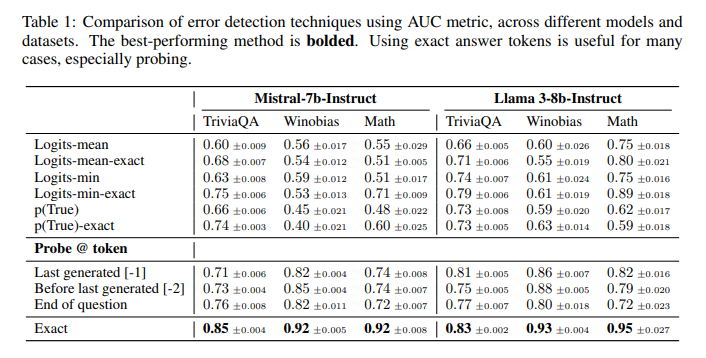
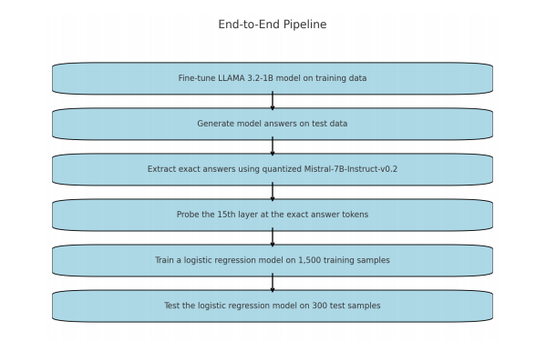
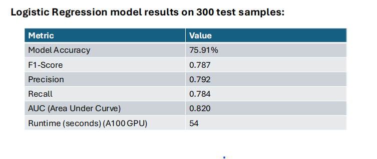

LLMs Know more than they show
December 11, 2024 • Sri Harsha P.,Poornima
Introduction
Large Language Models (LLMs) are powerful tools in natural language processing, yet they often produce "hallucinations," which refer to outputs that are factually incorrect, biased, or logically flawed. These hallucinations can be broadly categorized into several types: factual inaccuracies, where the model generates incorrect information; biases, reflecting prejudices present in the training data; and reasoning failures, where the model's logic is flawed. The internal mechanisms of LLMs encode signals about truthfulness, which can be used to detect and analyze these errors. However, these signals are not universal and vary across different tasks, indicating that LLMs have multiple ways of encoding truth. Understanding these hallucinations involves both examining how users perceive errors and analyzing the internal representations of LLMs. This dual approach helps in developing strategies to mitigate errors by leveraging the model's intrinsic knowledge.
Realted work
Earlier studies primarily focused on behavioral analyses, examining how users perceive errors like factual inaccuracies, biases, and reasoning failures (Bang et al., 2023; Ji et al., 2023; Ji et al., 2023). These works often adopted human-centric frameworks, defining hallucinations based on subjective interpretations, which limited their ability to address the root causes of such errors.
In contrast, recent research shifted towards examining internal representations of LLMs. Studies by Kadavath et al. (2022), Li et al. (2024), and Chen et al. (2024) demonstrated that LLMs encode signals of truthfulness within their intermediate states. However, these efforts were largely confined to error detection without exploring how these signals could be leveraged for deeper understanding or mitigation strategies.
The paper builds on these insights by revealing that truthfulness information is concentrated in specific tokens, such as exact answer tokens, which significantly enhances error detection. It also challenges claims of universal truthfulness encoding (Marks & Tegmark, 2023; Slobodkin et al., 2023), showing instead that LLMs encode task-specific notions of truth. Additionally, it identifies discrepancies between internal knowledge and external outputs, where models may encode correct answers but generate incorrect responses due to biases in training objectives.
Paper categorizes hallucinations
The paper LLMs know more than they show categorizes hallucinations in LLMs into several types based on their external behavior and internal representations:
1. Factual Inaccuracies: Errors where the model generates incorrect factual information, often due to incomplete or incorrect knowledge.
2. Biases: Outputs that reflect prejudices or stereotypes present in the training data, leading to skewed or discriminatory responses.
3. Reasoning Failures: Logical errors in the model's reasoning process, such as drawing incorrect conclusions from given premises.
4. Common-Sense Failures: Errors where the model fails to apply basic common-sense reasoning to its responses.
Methodology
The methodology outlined in the paper focuses on analyzing the internal representations of large language models (LLMs) to understand and mitigate hallucinations. The researchers conducted experiments using various LLMs, including Mistral-7b and Llama3-8b, across multiple datasets such as TriviaQA and HotpotQA. Their approach involved training classifiers on the internal states of LLMs, specifically targeting "exact answer tokens," which are critical for encoding truthfulness information.
The experiments were designed to evaluate error detection methods by comparing traditional techniques with those leveraging exact answer tokens. The researchers found that focusing on these specific tokens significantly improved error detection performance. They also explored the generalization of these methods across different tasks, revealing that truthfulness encoding is task-specific rather than universal. Additionally, the study included a taxonomy of error types, categorizing them based on model responses to repeated prompts. This analysis allowed the researchers to predict error patterns and develop tailored mitigation strategies
Results
A key finding is that truthfulness signals are highly localized in specific tokens, particularly the "exact answer tokens." Probing these tokens significantly improved error detection performance across various tasks and datasets. For instance, using exact answer tokens enhanced the area under the ROC curve (AUC) for error detection methods compared to traditional approaches like logits-based uncertainty estimations.
The study also revealed that these improvements are task-specific. Probing classifiers trained on one dataset often failed to generalize effectively to others unless the tasks required similar skills, such as factual retrieval or common-sense reasoning. This finding challenges prior claims of a universal truthfulness encoding in LLMs, suggesting instead that LLMs encode multiple, distinct notions of truthfulness depending on the task.
Additionally, the study explored error types by analyzing repeated model outputs. It categorized errors into patterns such as "consistently incorrect," "two competing answers," and "many answers." The internal states of LLMs were found to encode information about these error types, enabling their prediction with reasonable accuracy.
Finally, a significant discrepancy was identified between LLMs' internal truthfulness encoding and their external outputs. In some cases, models internally encoded correct answers but consistently generated incorrect ones due to biases in training objectives favoring plausible over accurate responses. This highlights opportunities for leveraging internal signals to align outputs with encoded knowledge, improving performance and reliability.
Our extended experiment
We adopted the code from the paper and experimented with medical dataset. We entended the code to work with LLAMA 3.2 1B. We first performed LoRA fine tuning on the model to encode medical information into the models. We then continued the same experimentation.
MedQuAD: A dataset with 47,457 Q&A pairs from 12 National Institutes of Health (NIH) websites, spanning 37 question types (e.g., treatments, diagnoses, side effects) and enriched with annotations like medical IDs and categories.
Our results
Opinion and Takeaway
Hallucinations: Do the internal representations of LLMs encode much more information about truthfulness : (ex: error types) ? Yes
Where are the truthfulness signals encoded in LLMs ? Exact answer tokens
Are these internal representations generalizable across different tasks? Not all the time
Does the model’s internal encoding identify the correct answer–yet might frequently generate an incorrect response? Yes
Opinion: Train the LLMs tailored towards the errors – more than bigger models and data.
Code
Code from the paper repo link
Our experimentation code Marks & Tegmark, 2023